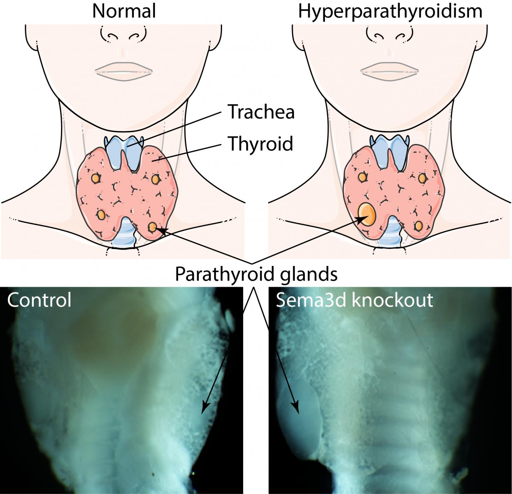

Hyperparathyroidism

SYMPTOMS:
- Joint pain.
-
Muscle weakness.
-
Feeling tired.
-
Depression.
-
Trouble concentrating.
-
Loss of appetite.
CAUSES
- A noncancerous (benign) growth, called an adenoma, forms on a single parathyroid gland. The adenoma causes the gland to overact and make more PTH. This is the most common cause.
-
Two or more of your parathyroid glands become enlarged, a condition called hyperplasia, and produce too much hormone.
-
Radiation treatment to the neck area.
-
Inherited conditions, such as multiple endocrine neoplasia type 1. This is a rare cause.
-
Cancer of a parathyroid gland (rare).
DIAGNOSIS
- A blood test to check your vitamin D level. It’s common to have a low vitamin D level if you have hyperparathyroidism.
-
A bone density test to check for bone loss.
-
An ultrasound or other imaging test of your kidneys to check for kidney stones.
-
A 24-hour urine collection test to measure the amount of calcium and other chemicals in your urine to help determine the cause of your hyperparathyroidism.
-
Blood tests to check how well your kidneys are working.
TREATMENT
- Drink more water.
-
Keep active and get more exercise to keep your bones strong.
-
Don’t take thiazide diuretics or lithium because these drugs can increase the level of calcium in your blood.
-
Ask your provider if you need to take a vitamin D supplement if your vitamin D level is low.